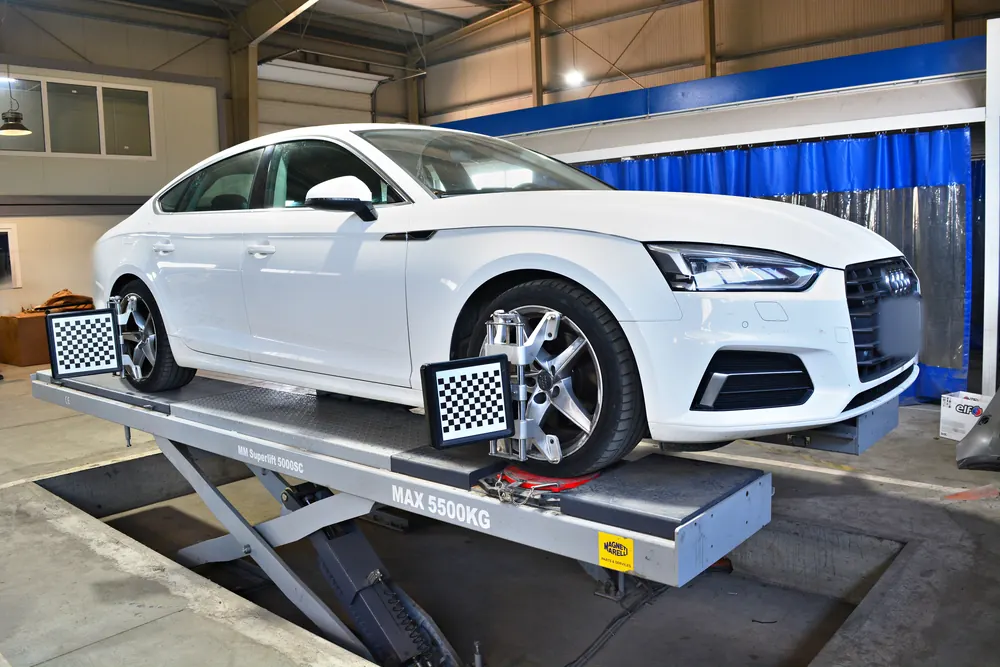

Când schimbi anvelopele de iarnă și de ce contează regula de 7 grade
Mulți șoferi așteaptă prima ninsoare ca să schimbe anvelopele. Nu este o alegere bună: atunci toate service-urile sunt aglomerate, iar primele dimineți cu polei te prind nepregătit. Momentul potrivit ține de temperatură și de starea drumului, nu de calendar.
Mai jos găsești ce spune legea, de unde vine regula celor 7 grade, cum îți dai seama dacă anvelopele de anul trecut mai sunt bune și ce merită cerut la montaj. Am adăugat și câteva lucruri specifice zonei Brașovului, unde iarna vine mai devreme decât în restul țării.
Ce spune legea
- Nu există o dată fixă. Anvelopele de iarnă sunt obligatorii când circuli pe un drum acoperit cu zăpadă, gheață sau polei, indiferent de lună. Poate fi octombrie sau aprilie.
- Marcajul M+S (sau M.S., M&S) de pe flanc e cel care face dintr-o anvelopă una de iarnă, în sensul legii.
- Toate roțile: la autoturisme, anvelopele de iarnă se montează pe toate cele patru roți, nu doar pe puntea motoare.
- Dacă nu le ai, riști amendă și reținerea certificatului de înmatriculare.
- Lanțurile: pe sectoarele semnalizate cu indicatorul pentru lanțuri de zăpadă ai nevoie de ele indiferent de anvelope.
Pe lângă amendă, există și o consecință practică: dacă rămâi blocat pe un drum cu zăpadă sau provoci un accident cu anvelope nepotrivite, vinovăția e mai greu de discutat.
Regula celor 7 grade
Sub aproximativ 7 grade Celsius, compusul anvelopelor de vară se întărește și pierde din aderență, chiar și pe asfalt uscat. Anvelopele de iarnă sunt făcute dintr-un amestec care rămâne elastic la frig și au mii de lamele fine care mușcă din zăpadă și gheață. De aceea frânează pe o distanță mai scurtă și țin mai bine în curbe.
Momentul potrivit e când temperaturile scad constant sub 7 grade, în special dimineața și seara, când pleci la serviciu și când te întorci. Nu contează că la prânz sunt 12 grade: drumul pe care circuli tu e cel de la 7 dimineața.
Regula funcționează și invers. Primăvara, pe asfalt cald, anvelopele de iarnă se uzează repede, frânează mai slab și cresc consumul.
Unde se vede diferența: la frânare
Aderența nu se simte la mers drept, ci atunci când ai nevoie de ea: la o frânare bruscă, într-o curbă sau la plecarea de pe loc în rampă. Pe zăpadă, o mașină cu anvelope de vară are nevoie de o distanță mult mai mare ca să se oprească decât aceeași mașină cu anvelope de iarnă. La viteze de oraș, diferența poate însemna câteva lungimi de mașină, adică exact spațiul dintre tine și cel din față.
Sistemele de siguranță ale mașinii, cum sunt ABS și ESP, nu compensează lipsa aderenței. Ele pot lucra doar cu aderența pe care le-o dau anvelopele.
Vară, iarnă sau all season: diferențele
| Vară | Iarnă | All season | |
|---|---|---|---|
| Compus | Mai dur, pentru căldură | Moale, elastic la frig | Intermediar |
| Profil | Canale late, puține lamele | Adânc, cu multe lamele | Combinat |
| Cel mai bun la | Peste 7 grade | Sub 7 grade, zăpadă, gheață | Ierni blânde, mers în oraș |
| Marcaj M+S | Nu | Da | Doar dacă e inscripționat |
| Acceptată iarna | Nu | Da | Da, cu M+S |
Pe multe anvelope de iarnă vei găsi și simbolul cu un fulg într-un munte cu trei vârfuri. El arată că anvelopa a trecut un test de aderență pe zăpadă, spre deosebire de M+S, care este o declarație a producătorului. Legea de la noi cere M+S, dar simbolul cu fulg e un semn bun când alegi un set nou.
Anvelopele all season sunt o soluție?
Dacă au marcajul M+S, sunt acceptate iarna. Sunt un compromis rezonabil pentru cine merge puțin, mai ales prin oraș, și nu vrea două seturi. Compromisul se vede la extreme: vara frânează mai slab decât una de vară, iar pe zăpadă adevărată nu ajung la nivelul unei anvelope de iarnă.
Pentru drumuri de munte, cum sunt cele spre Poiana Brașov, Predeal sau Bran, un set de iarnă rămâne alegerea mai sigură.
Ce verifici la anvelopele de anul trecut
Înainte să le montezi, uită-te la patru lucruri. Durează cinci minute și te poate scuti de un drum degeaba.
- Adâncimea profilului: limita legală e de 1,6 mm, dar pentru iarnă sub 4 mm aderența pe zăpadă scade vizibil. În canalele anvelopei există mici praguri, indicatorii de uzură: când profilul ajunge la nivelul lor, anvelopa e la limita legală.
- Vârsta: ultimele patru cifre din codul DOT de pe flanc arată săptămâna și anul fabricației (2421 înseamnă săptămâna 24 din 2021). Cu timpul compusul se întărește, chiar dacă profilul arată bine. După aproximativ 6 ani anvelopele merită verificate atent, iar pe la 10 ani înlocuite, indiferent cum arată.
- Flancurile: crăpături, tăieturi sau umflături înseamnă anvelopă de înlocuit. O umflătură arată că structura interioară e ruptă.
- Uzura neuniformă: spune ceva despre mașină, nu doar despre anvelopă.
Ce îți spune uzura anvelopei
- Uzată pe ambele margini: ai circulat cu presiune prea mică.
- Uzată pe mijloc: presiune prea mare.
- Uzată doar pe o margine: geometria roților e dereglată.
- Uzură în valuri sau pete: amortizoare obosite sau roți neechilibrate.
Dacă montezi un set nou pe o mașină cu geometria dereglată, îl vei uza la fel de repede. De aceea merită rezolvată întâi cauza.

Cum citești inscripțiile de pe flanc
Pe orice anvelopă găsești un șir de tipul 205/55 R16 91H. Fiecare parte spune ceva:
- 205: lățimea anvelopei, în milimetri.
- 55: înălțimea flancului, ca procent din lățime.
- R16: construcție radială, pentru jantă de 16 țoli.
- 91: indicele de sarcină, adică greutatea maximă pe care o poate duce o roată.
- H: indicele de viteză, adică viteza maximă pentru care e construită anvelopa.
Dimensiunile permise pentru mașina ta sunt în cartea de identitate a vehiculului și în manualul mașinii. La anvelopele de iarnă se acceptă un indice de viteză mai mic decât cel al mașinii, cu condiția să nu depășești viteza anvelopei.
Dacă îți cumperi un set nou
Prețul nu e singurul criteriu. Câteva lucruri la care merită să te uiți:
- Eticheta europeană, care arată aderența pe ud, consumul de combustibil și zgomotul de rulare. La anvelopele de iarnă apare și pictograma pentru zăpadă.
- Data fabricației din codul DOT. O anvelopă „nouă" care a stat câțiva ani în depozit a pierdut deja o parte din viață.
- Patru anvelope identice, de aceeași marcă și același model. Pe aceeași punte e obligatoriu să fie la fel.
- Cum circuli de fapt: pentru navetă pe drumuri de munte contează aderența pe zăpadă, pentru mers în oraș contează mai mult frânarea pe ud.
Ce merită știut la montaj
- Sensul de rulare: multe anvelope de iarnă sunt direcționale. Săgeata de pe flanc trebuie să arate sensul de mers înainte. Montate invers, evacuează prost apa și zăpada.
- Cele mai bune pe spate: dacă două anvelope au profil mai bun, producătorii recomandă montarea lor pe puntea spate, indiferent de tracțiune. O mașină care derapează cu spatele e mai greu de controlat.
- Echilibrarea se face la fiecare montaj. Fără ea apar vibrații în volan și uzură neuniformă.
- Strângerea roților se verifică din nou după primii 50 - 100 km.
- Senzorii de presiune: la mașinile cu senzori în roți, sistemul trebuie resetat după schimb, altfel rămâne martorul aprins.
Jante separate sau doar schimb de anvelope
Dacă ții anvelopele de iarnă pe un al doilea set de jante, schimbul durează mai puțin, iar anvelopele nu mai sunt demontate și montate de două ori pe an, operațiune care le solicită talonul. Dezavantajul e costul inițial al jantelor și faptul că ai nevoie de loc pentru patru roți întregi.
Dacă ai un singur set de jante, nu e nicio problemă, cu condiția ca montajul să fie făcut cu echipament care protejează janta și talonul.
Presiunea, mai importantă iarna
Aerul se contractă la frig, așa că presiunea scade cu aproximativ 0,1 bar la fiecare 10 grade pierdute. O anvelopă umflată corect în septembrie poate fi vizibil dezumflată în ianuarie. Verifică presiunea după schimb și apoi lunar, cu anvelopele reci, nu după un drum lung.
Valorile corecte sunt pe eticheta din rama ușii șoferului sau de pe clapeta rezervorului. Nu uita de roata de rezervă, dacă mașina are una.
Cum păstrezi anvelopele de vară
- Curate și uscate, într-un loc ferit de soare, de surse de căldură și de uleiuri sau solvenți.
- Cu jantă: suprapuse sau atârnate. Nu le ține în picioare luni întregi.
- Fără jantă: în picioare, una lângă alta, rotite din când în când.
- Notează poziția fiecăreia (față stânga, spate dreapta), ca să le poți roti la următorul montaj și să se uzeze uniform.
Iarna în zona Brașovului
Brașovul e înconjurat de munți, iar diferențele de la o zonă la alta sunt mari. Poți pleca din oraș pe asfalt uscat și să găsești zăpadă pe drumul spre Poiana Brașov, pe DN1 spre Predeal, pe DN73 prin Pasul Bran sau pe DN1A spre Cheia. Diminețile cu polei apar aici mai devreme toamna și țin mai mult primăvara.
Din acest motiv, în zona noastră regula celor 7 grade se aplică de obicei cu câteva săptămâni mai devreme decât la câmpie. Dacă faci des naveta pe unul dintre aceste drumuri, nu aștepta prima prognoză de ninsoare.
Primele zile cu anvelopele de iarnă
Anvelopele noi au nevoie de câteva sute de kilometri până ajung la aderența lor normală, pentru că suprafața lor păstrează urme din procesul de fabricație. În această perioadă evită accelerările și frânările bruște.
Indiferent cât de bune sunt anvelopele, pe zăpadă și gheață distanța de frânare rămâne de câteva ori mai mare decât pe asfalt uscat. Păstrează o distanță mai mare față de mașina din față, frânează din timp și lin și redu viteza înainte de curbă, nu în ea.
Ce mai merită să ai în mașină iarna
- Lichid de parbriz de iarnă, care nu îngheață în rezervor și în duze.
- Racletă și perie pentru gheață și zăpadă. Curăță toate geamurile, farurile și plafonul, nu doar o fereastră în parbriz.
- Lanțuri de zăpadă, dacă mergi pe drumuri de munte, și o probă de montaj făcută acasă, nu pe marginea drumului.
- Cabluri de pornire sau o baterie externă. Frigul scoate la iveală bateriile obosite.
- O lanternă, mănuși și o pătură, pentru cazul în care rămâi blocat pe drum.
Cinci greșeli întâlnite des
- Doar două anvelope de iarnă, pe puntea motoare. Mașina devine imprevizibilă la frânare și în curbe.
- Anvelope vechi, cu profil „încă bun". Un compus întărit nu mai are aderență, oricât profil ar avea.
- Presiune neverificată toată iarna.
- Dimensiuni diferite de cele din cartea mașinii, montate fără verificare.
- Schimb amânat până la prima zăpadă, când toată lumea are aceeași idee.
Le schimbi la noi
La GAV Auto montăm și echilibrăm anvelopele, verificăm presiunea și uzura și îți spunem dacă mai rezistă un sezon. Dacă uzura arată o problemă de geometrie, o putem regla în aceeași vizită. Iar dacă tot ești la noi, poți face și revizia sau ITP-ul.
Întrebări frecvente
De la ce dată sunt obligatorii anvelopele de iarnă?
Nu există o dată în lege. Sunt obligatorii atunci când circuli pe un drum acoperit cu zăpadă, gheață sau polei, în orice lună s-ar întâmpla.
Pot circula iarna cu anvelope all season?
Da, dacă au pe flanc marcajul M+S. Fără acest marcaj, anvelopa nu e considerată de iarnă.
Ce profil minim trebuie să aibă anvelopele de iarnă?
Limita legală e de 1,6 mm. Pentru aderență bună pe zăpadă recomandăm cel puțin 4 mm.
Pot monta anvelope de iarnă doar pe roțile motoare?
Nu. La autoturisme se montează pe toate cele patru roți. Cu doar două, mașina se comportă imprevizibil la frânare și în curbe.
Cât de vechi pot fi anvelopele?
Verifică anul din codul DOT de pe flanc. După aproximativ 6 ani merită verificate atent, iar pe la 10 ani înlocuite, chiar dacă profilul arată bine.
Când trec înapoi pe anvelope de vară?
Când temperaturile rămân constant peste 7 grade. Pe asfalt cald, anvelopele de iarnă se uzează repede și frânează mai slab.
Trebuie echilibrate roțile la fiecare schimb?
Da. Echilibrarea se face la fiecare montaj, altfel apar vibrații în volan și uzură neuniformă.